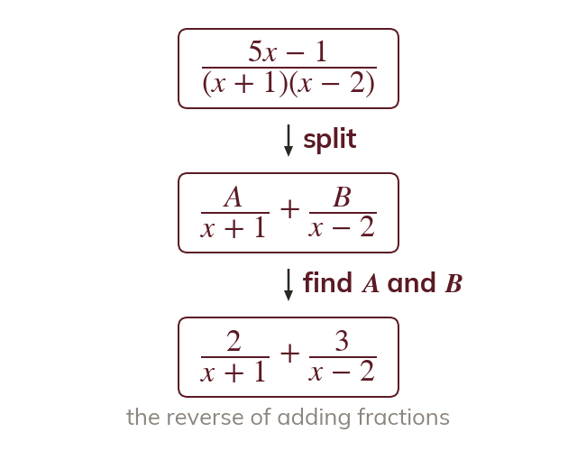
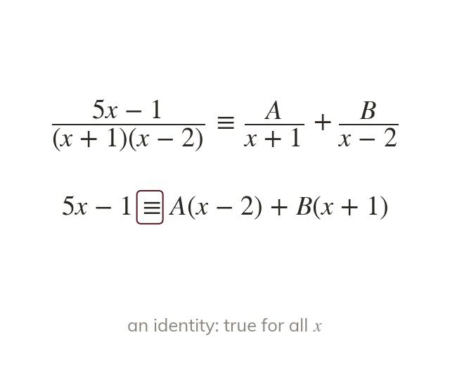
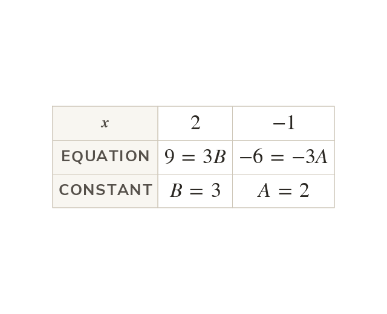
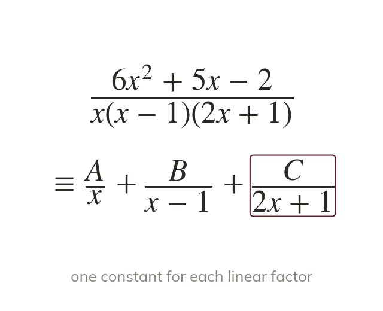
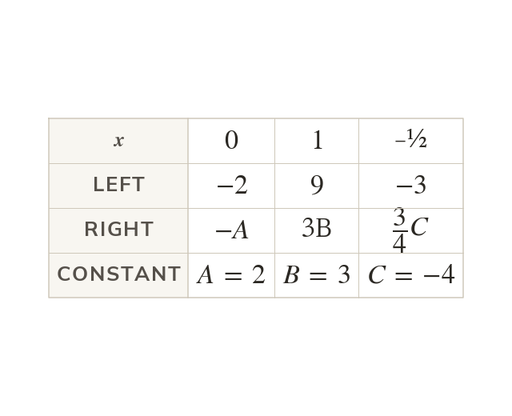
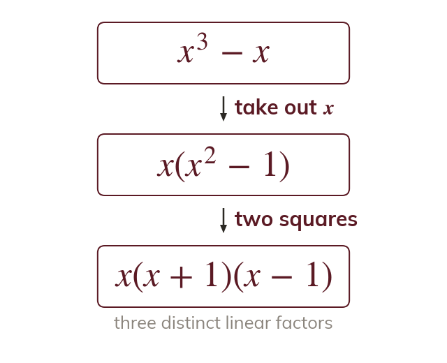

Adding in reverse
combines to Partial fractions undo this, splitting the single fraction back into its parts.
Splitting one fraction into simpler ones is the reverse of adding them, as in the last lesson. Partial fractions are needed for the binomial expansions of chapter and, later in Year for integration.
Work down the page at your own pace. Write every answer in your book first, then click to check it.
Read each card, then follow the worked examples one step at a time.

combines to Partial fractions undo this, splitting the single fraction back into its parts.

Multiply both sides by the denominator to clear the fractions. The result is an identity, true for every value of

Choose the value of that makes each bracket zero. Each one removes a term and leaves one unknown.
Pick an answer. If it's wrong, the feedback tells you which mistake it was.
Write the blanks in your book first, then tap each one to check.
Read each card, then follow the worked examples one step at a time.

A denominator with three different linear factors splits into three partial fractions. Each factor gets its own constant.

Multiplying through gives three terms, each missing one factor. Substituting a root makes two of them zero.

A cubic denominator may need factorising before you can start. Take out a common factor, then factorise the quadratic, or use the factor theorem.
Pick an answer. If it's wrong, the feedback tells you which mistake it was.
Write the blanks in your book first, then tap each one to check.
Finished? Next lesson: 13.P1.4 Repeated Factors.
For each skill, tap the one that is true for you today. Your Revise pages start with anything you mark Not yet.
Your ratings are saved on this device only.